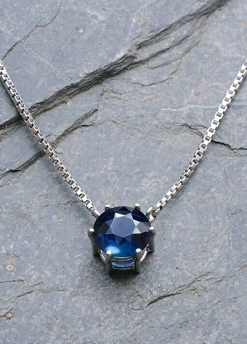

Feingold Vogel · Karlsbad
Ein Auge für das Besondere.
Ein Saphir, eine alte Punze, ein Gespräch über Gold. Entdecken Sie mit Dietmar Vogelmann die Welt der Edelmetalle und der Schmuckstücke, die bleiben.

Die Themen
Was interessiert Sie?

Vintage-Schmuck
Der Shop ist in Vorbereitung. Eine Saphirkette in 18 Karat Gold gibt einen ersten Einblick.
Zur Schmuckvorschau
Gold & Silber
Was eine Punze verrät und wie Sie Edelmetalle über Nachlassgold verkaufen können.
Zu den Edelmetallen
Edelsteine
Vom losen Stein bis zum gefassten Saphir. Was Farbe, Schliff und Befund erzählen.
Zu den Edelsteinen
Goldgezwitscher
Ein Tisch. Zwei Perspektiven.
Welche Geschichten erzählt sich die Goldbranche hinter den Kulissen? Dietmar lädt Gäste zum Videogespräch ein. Das Crowdfunding für das Format ist für den 1. Dezember 2026 geplant.
Den Videocast kennenlernen